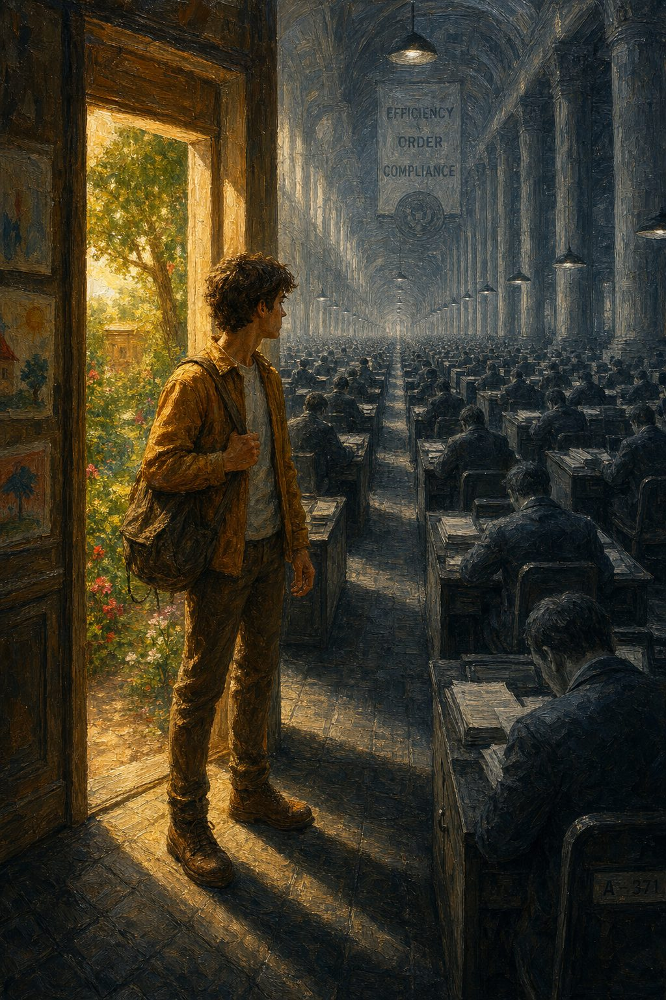

Redactionele inleiding
Waar deze editie heen gaat en waarom
Voorwoord · 5 min lezen

### Redactionele inleiding bij editie 4 van Het Open Vizier
Editie 3 ging over het kind. Hoe het oergevoel ontstaat, hoe het werkt, hoe we het herkennen. En vooral: hoe wij het er stelselmatig uit persen — eerst in de schoolbanken, daarna in elke selectiestap die volgt. De mens onder het ijs, noemden we het. Het kind dat een kamer binnenstapt en in tien seconden weet wie er is, tegenover de samenleving die dat instrument niet meer wil zien.
Editie 4 gaat over wat er met dat kind gebeurt zodra het volwassen wordt.
Want het kind verdwijnt niet. Het wordt manager, ambtenaar, dokter, leraar, verkoper, ondernemer, rechter. Het komt terecht in instituties — banken, fondsen, bedrijven, departementen, toezichthouders — die in de loop van een eeuw zijn opgebouwd uit de overblijfselen van mensen bij wie de antenne is uitgezet. Generatie op generatie geselecteerd op het missen van precies dat instrument waarmee echte beslissingen worden genomen.
Het resultaat staat overal om ons heen. We zien het in banken die alleen nog krediet geven aan wie het niet nodig heeft. In subsidiekanalen die het geld systematisch laten lopen naar de partij die het aanvraagformulier beheerst. In bedrijven die door professionele bestuurders worden leeggehaald terwijl de cijfers nog een tijd doorlopen op de inertie van wat de oprichter heeft gebouwd. In zorg die zorg-fabriek heet. In onderwijs dat onderwijs-fabriek heet. In een staat die regels meet en mensen niet meer ziet.
Dit is geen samenzwering. Het is veel erger dan dat. Het is een patroon dat zichzelf voortbrengt zonder dat iemand er voor verantwoordelijk is. Iedereen volgt de procedure. Iedereen vult het formulier in. Iedereen levert zijn KPI's. En toch wordt de samenleving steeds slechter terwijl de rapportages steeds beter worden.
In editie 4 lopen we deze instituties één voor één langs. We beschrijven niet alleen wat er misgaat — dat doen veel anderen al. We laten zien wat er onderliggend gebeurt: hoe de bovenste hersenlaag overal de plek heeft ingenomen van de onderste. Hoe regels, modellen en procedures het oordeel hebben vervangen. Hoe het instrument waarmee een dorpsbankier vijftig jaar geleden zijn klant kon meten — een blik, een gesprek, een gevoel — juridisch verboden is geworden in elke moderne kredietverstrekking. En hoe ditzelfde patroon zich herhaalt in elk loket waar mensen om hulp komen.
We beginnen met de subsidieverlening, omdat daar het patroon het meest pervers is — publiek geld dat regressief stroomt naar wie het niet nodig heeft, gefinancierd door iedereen, beheerd door een papier-industrie die zichzelf in stand houdt. Daarna lopen we langs de andere posities: de ingehuurde CEO, de turnaround-consultant, de bankier, de verzekeraar, de toezichthouder, de rechter, de jeugdzorgwerker. Tien artikelen, één doorlopend verhaal.
De toon blijft die van Open Vizier: direct, eerlijk, niet diplomatiek, persoonlijk. Wie aanvallen wil, is welkom. Het is wat we hebben gebouwd om aanvalbaar te zijn — anders blijft het, in de woorden van onze redactie, maar gemurmel in de struiken.
Wat editie 3 beschreef als probleem op kinderniveau, beschrijft editie 4 als systeem op volwassenniveau. Wat we de kinderen aandoen, doen we daarna onszelf aan. Tot we beseffen dat het te repareren is — niet door een nieuwe wet, niet door een nieuwe regeling, niet door een nieuwe commissie. Maar door het terugbrengen van het instrument dat we er hebben uitgezet.
De openvizier-redactie
Deze editie verschijnt gefaseerd over de komende weken op openvizier.org, in vier talen, met audio en uitgebreide naslagwerken.